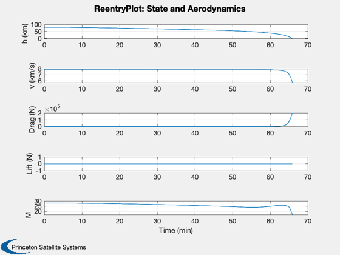
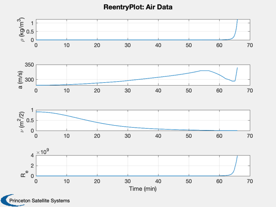
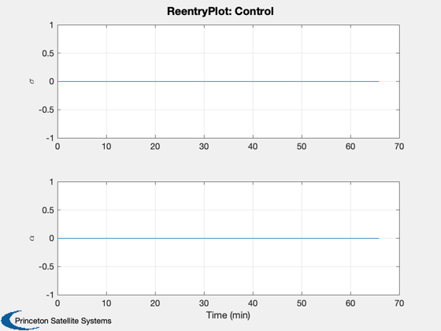
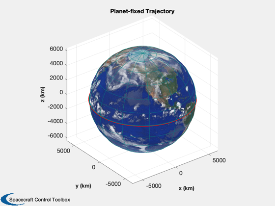
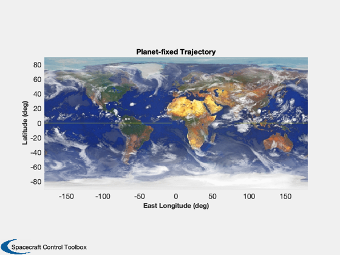
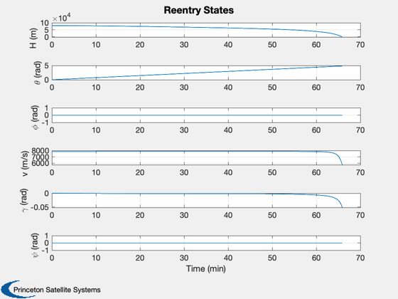
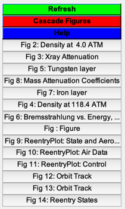

A reentry simulation. Uses RHSReentry.m.
------------------------------------------------------------------------
See also ReentryPlot, RHSReentry, Plot2D, Figui
------------------------------------------------------------------------
Contents
Simulation parameters
nSim = 50000;
dT = 0.0001;
h = 80000;
mu = Constant('mu earth')*1e9;
d = RHSReentry;
Initial states
vC = sqrt(d.rPlanet*d.g);
if( h > 80000 )
error('The altitude is too high for StdAtm.');
end
r = d.rPlanet + h;
v = sqrt(mu/r)/vC;
r = r/d.rPlanet;
x = [r;0;0;v;0;0;0];
x = [x zeros(7,nSim)];
u = zeros(2,nSim+1);
t = linspace(1,nSim+1,nSim+1)*dT;
TimeDisplay( 'initialize', 'Reentry Simulation', nSim )
Simulation
for k = 1:nSim
TimeDisplay( 'update' )
x(:,k+1) = RK4( 'RHSReentry', x(:,k), dT, 0, d );
u(:,k+1) = [d.sigma;d.alpha];
h = x(1,k+1)*d.rPlanet - d.rPlanet;
if( h < 1 )
break;
end
end
TimeDisplay( 'close' )
Plotting
x = x(:,1:(k+1));
u = u(:,1:(k+1));
t = t(1:(k+1))*sqrt(d.rPlanet/d.g);
ReentryPlot( x, t, d, u );
[t, tL] = TimeLabl(t);
yL = {'H (m)' '\theta (rad)' '\phi (rad)' 'v (m/s)' '\gamma (rad)' '\psi (rad)'};
x(1,:) = x(1,:)*d.rPlanet - d.rPlanet;
x(4,:) = x(4,:)*vC;
Plot2D( t, x(1:6,:), tL, yL, 'Reentry States');
Figui
      